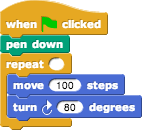
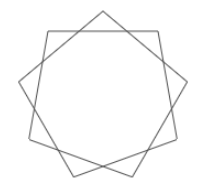

1. Through how many degrees did your sprite turn altogether (not per side) when you drew a triangle?
Answer:
Each turn was 120 degrees, and there were three turns, for a total of 3*120=360 degrees.
2. Through how many degrees did your sprite turn altogether when you drew a pentagon?
Answer:
3. Through how many degrees did your sprite turn altogether when you drew a five-pointed star?
Answer:
Polygons that don't intersect themselves require a total turning of 360 degrees — one full circle. Stars turn all the way around more than once. Try using something like a pencil (flat on the table) to simulate a sprite tracing the path of a star.
4. What is the smallest number you can put into the numeric input of the repeat block below to produce the picture shown?

Answer:
This figure is a nine-pointed star.